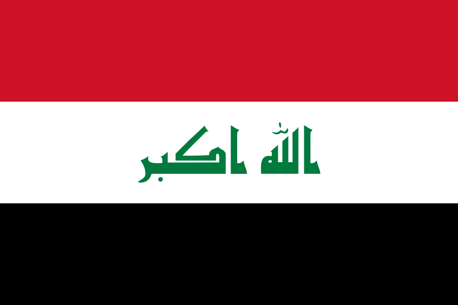
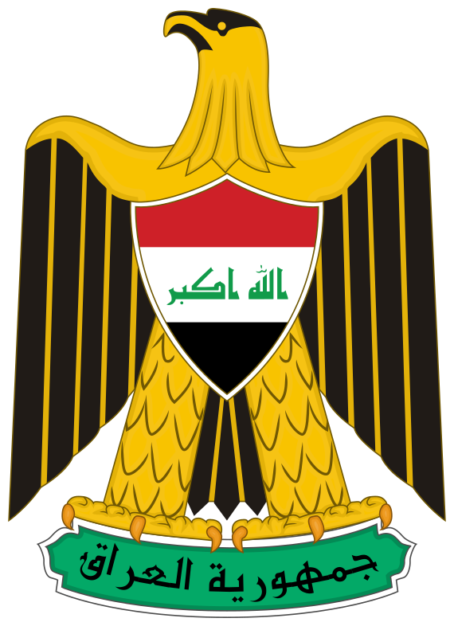

Irakin tasavalta eli Irak (arab. العراق, al-‘Irāq; kurdiksi كۆماری عێراق, Komarî Êraq) on tasavalta Lähi-idässä.
Irakin naapurimaita ovat Saudi-Arabia, Kuwait, Syyria, Turkki, Jordania ja Iran. Väkiluku on noin 40 miljoonaa ja pinta-ala noin 430 000 neliökilometriä.
Irakin pääkaupunki on Bagdad, jossa asuu noin 8 770 000 ihmistä. Muita suuria kaupunkeja ovat muun muassa Mosul ja Basra.
Väestö jakautuu pääosin kolmeen ryhmään kielen ja uskonnon perusteella: kaksi kolmannesta väestöstä on arabeja, loput kurdeja.
Suurin osa arabeista on šiiamuslimeja, mutta sunnimuslimeja on noin kolmannes koko väestöstä. Irak on maailman tärkeimpiä öljyntuottajamaita.
Maassa käytiin Irakin sota vuosina 2003–2010.

Irak lukuina
- pinta-ala
- yhteensä 438 317[1] km² (sijalla 58)
– josta sisävesiä 1,1 %
- väkiluku 2016 40 146 025 (sijalla 37)
– väestönkasvu 2.87[1] % (2016)
- Viralliset kielet arabia, kurdi
- Valuutta Irakin dinaari (IQD)
- - BKT
– yhteensä 596,7 mrd. USD[1] (sijalla 36)
– per asukas 16 500 USD
HDI (2014) 0,654[3] (sijalla 121)
- Elinkeinorakenne (BKT:sta)
– maatalous 5,7[1] %
– teollisuus 45,1[1] %
– palvelut 49,3[1] %
Aikavyöhyke UTC+3
Irakin Maantiede
Irakin maastonmuodot voidaan jakaa neljään osaan: maan länsi- ja lounaisosien aavikko, Eufratin ja Tigrisin jokilaaksot, näiden jokien välissä oleva ylänkö ja maan pohjoisosien vuoristo.[5]
Irakin ilmasto on kuuma ja kuiva. Bagdadissa vuoden kuumin kuukausi on heinäkuu, keskimääräinen ylin lämpötila 44 astetta, ja viilein tammikuu, keskimääräinen alin 3,8 astetta. Kesäkuusta syyskuuhun ei yleensä sada lainkaan, joulukuussa 20 mm ja tammikuussa 27 mm.[6]
Kuivuudesta huolimatta keinokastelun avulla harjoitetaan voimaperäistä maanviljelyä Eufratin ja Tigrisin jokilaaksoissa, jotka ovat maan hedelmällisintä seutua. Tärkeimmät maataloustuotteet ovat kotimaiseen käyttöön menevä vilja, sekä taatelit joita riittää vientiinkin.[7]
Irakin korkein huippu on maan pohjoisosassa, lähellä Turkin vastaista rajaa sijaitseva 3 607 metriä korkea Zagrosvuori.
